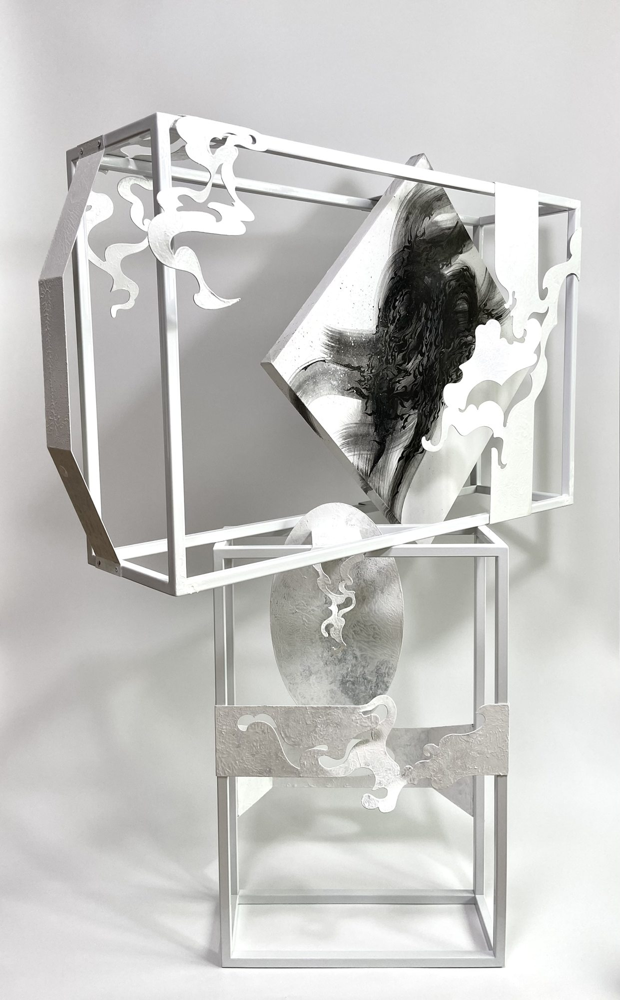

각진 요동
- 연도Year
- 2024
- 재료Material
- EGI, 각 파이프, 먹
- 크기Size
- 80×80×117cm
- 시리즈Series
- 입체, 설치Sculpture & Installation
이 작업은 견고한 질서 안에서 시작되는 미세한 진동과 그 안에서 발생하는 새로운 가능성에 주목한다. 사회는 규칙과 질서를 통해 유지되고, 우리는 그 안에서 각자의 역할을 수행하며 살아간다. 새로움은 이러한 질서와 무관하게 발생하는 것이 아니라, 오히려 규격화된 구조 위에서 시작된다고 생각한다. 일상이 있어야 일탈이 존재하고, 익숙함이 있어야 낯섦이 드러나며, 무탈함 속에서 사건과 사고가 발생한다.
이러한 생각은 오래전 들었던 한마디에서 시작되었다. 고등학생 때 '모범생이라 예술을 하기에는 창의성이 부족할 것 같다'는 말을 들은 적이 있다. 그 말은 오랫동안 잊고 있었지만 어느 날 문득 다시 떠올랐다. 나는 언제나 규칙을 따르며 정해진 틀 안에서 살아왔고, 그렇다면 이러한 삶은 창의성과 거리가 먼 것일까 하는 질문을 품게 되었다.
작품은 이러한 질문을 각진 틀과 그 위에 발생하는 사건들로 표현한다. 규격화된 구조는 사회의 시스템과 반복되는 일상을 상징하며, 그 사이를 가로지르는 사건과 이미지들은 변화의 시작이자 새로운 가능성의 태동을 의미한다. 작품은 틀을 깨는 행위보다, 틀 안에서 발생하는 미세한 요동에 주목한다. 창의성은 규칙의 반대편에 존재하는 것이 아니라, 질서 속에서 발생하는 작은 균열과 진동으로부터 시작된다고 생각한다.
This work focuses on the subtle vibrations that begin within a firm order, and on the new possibilities that arise there. Society is maintained through rules and order, and within it we each live out our roles. I believe that newness does not arise apart from this order but rather begins on top of standardized structures. There is deviation only because there is everyday life; strangeness shows itself only against the familiar; incidents and accidents happen in the midst of uneventful days.
This thought began with a remark I heard long ago. In high school I was once told, "You're a model student, so you probably lack the creativity to do art." I had forgotten those words for a long time, but one day they suddenly came back to me. I had always followed the rules and lived within set frames, and so I began to wonder: is such a life far removed from creativity?
The work expresses this question through an angular frame and the events that occur upon it. The standardized structure stands for the systems of society and the repetition of daily life, while the events and images that cut across it signify the beginning of change and the stirring of new possibilities. Rather than the act of breaking the frame, the work focuses on the small tremors that occur within it. I believe creativity does not exist on the opposite side of rules, but begins with the small cracks and vibrations that arise within order.